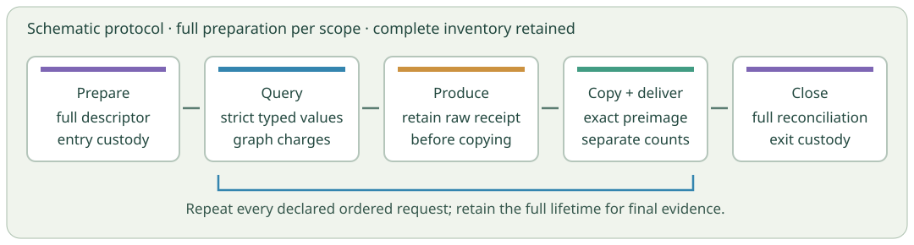

Component and integration
A scoped palette API, complete raw receipt retention, exact graph callback routing, full lifetime ownership and conservative expanded output accounting.
· UTC date · one new reviewed invocation · unchanged whole bank and caps
Parallel implementation and review produced a complete batched experiment. Its saved failure record reports that every planned case and diagnostic reached the output stage. The complete canonical packet exceeded the original cap, so the experiment remains unqualified.
The worker exited with code 2 at FULL_PACKET_WRITE, reporting PolicyFailure: whole JSON packet cap. The runner reaped it, observed its process group absent and closed the logs. The one-use grant is retired with no remaining invocations.
The complete worker-failure.json records all \(15\) normal case IDs, \(33\) original diagnostic records, and all \(28\) new groups with \(55\) variants. The new progress record says COMPLETE. These are diagnostic observations about work reached before writing; the missing canonical packet prevents admission of a complete finite calibration.
The canonical temporary file contains \(124\,780\,541\) bytes. It has no committed complete counterpart and is retained only as raw bytes and a hash. Neither it nor the historical partial is parsed, completed, projected or admitted. The separate failed-prefix temporary file is empty.
Runner entry to terminal observation: \(148.885\,\mathrm{s}\). Worker high-water memory: \(937\,689\,088\) bytes, approximately \(894.25\,\mathrm{MiB}\). The conservative physical ledger, including the original metadata reservation, is \(134\,732\,153\) bytes: \(134\,732\,153 > 134\,217\,728\). It fails the original cap even though cleanup closed before the outer deadline.
The result deadline remains \(180\,\mathrm{s}\); the full custody deadline remains \(210\,\mathrm{s}\). The epoch starts at runner Source entry and excludes the observer and interpreter prelude. Standalone worker memory is not a full production or native-checker fit measurement.
The failure record captures \(324\,982\,843\) Root callbacks before later negative retention. This is a cutoff observation, not CPU work or a final callback total. Completed compiler, search, verifier and oracle call counts in the runner remain literal null. There is no complete result, worker header, scalar failure summary or full available prefix.
palette-empty-transitionpalette-all-stationarypalette-mixed-holespalette-five-symbolspalette-large-logical-universeconnected-failed-children-firstconnected-failed-children-alldistant-DEAD-before-FORCEDdistant-FORCED-before-BRANCHearliest-before-lower-degree-TEST-VARIANToff-support-zero-pinwhole-board-capacity1-head-prefixwhole-board-capacity1-head-suffixwhole-board-capacity2-head-prefixwhole-board-capacity2-head-suffixDescriptor preparation and full source custody occur at explicit profile entry and exit. Each internal query still has strict typed argument checks and uses the exact graph charge callback. Small-query scopes contain at most 128 ordered requests; preparation is repeated for each scope. No inventory or requested rank is removed.

Protocol schematic, not a saved tiling or mathematical proof. Colors distinguish preparation/custody, queries, raw production and delivery.
Production, complete typed preimage and delivery have separate counters. A raw receipt is retained before a copy callback can fail. A scope that fails remains unadmitted, with the available raw lifetime preserved.
The canonical packet keeps the full ordinary profile lifetimes. Repeated return fields have explicit bindings to those lifetimes, and their conservative reconstructed byte cost remains charged to the original expanded-output limit.
The graph owns an immutable copy of the palette descriptor. Independent review caught a guard that required the original object identity, which would have refused the first graph query. The successor retains that copied argument and checks full strict typed equality. The rejected predecessor and exact repair are archived.
Ordinary exclusive source/input ownership and read-only callbacks are assumed. Function/code/default/closure owner checks do not deeply seal mutable globals or protect against concurrent adversarial mutation.
A scoped palette API, complete raw receipt retention, exact graph callback routing, full lifetime ownership and conservative expanded output accounting.
A separate fixed bank of 28 groups and 55 variants covering faults, quotas, mutation, custody and bounded scalar summaries.
Whole-source integration review before a grant, followed by passive review of the complete saved outcome. The review found a descriptor-copy identity mismatch before execution.
Assemble the exact experiment, preserve the rejected predecessor, authorize at most one reviewed invocation, and publish the evidence. Measured execution is sequential with the other agents idle.
Source review recorded \(172\) static checks and \(14\) manual findings. A separate grant-only review recorded \(50\) checks. Those reviews establish readiness for this one attempt; they do not convert its output failure into a passed experiment. A passive saved-data review recorded \(208\) consistency checks. Those checks confirm the negative record and its limits, without mathematical replay. The reviews are linked below.
The saved complete failure record contains the following groups and reports their variants passed. All remain diagnostic observations within this rejected whole run. The original diagnostic bank is retained separately and unchanged.
| Group | Variants | Saved report |
|---|---|---|
batch-ordered-dynamic | \(1\) | COMPLETE; variants PASSED (diagnostic only) |
batch-ordered-static | \(1\) | COMPLETE; variants PASSED (diagnostic only) |
batch-foreign-entry | \(3\) | COMPLETE; variants PASSED (diagnostic only) |
batch-foreign-preparation | \(3\) | COMPLETE; variants PASSED (diagnostic only) |
batch-foreign-query-kernel | \(3\) | COMPLETE; variants PASSED (diagnostic only) |
batch-foreign-first-receipt-tree | \(3\) | COMPLETE; variants PASSED (diagnostic only) |
batch-foreign-reconciliation | \(3\) | COMPLETE; variants PASSED (diagnostic only) |
batch-foreign-body | \(3\) | COMPLETE; variants PASSED (diagnostic only) |
batch-foreign-retain | \(3\) | COMPLETE; variants PASSED (diagnostic only) |
batch-foreign-custody-entry | \(3\) | COMPLETE; variants PASSED (diagnostic only) |
batch-foreign-custody-exit | \(3\) | COMPLETE; variants PASSED (diagnostic only) |
batch-foreign-public-class | \(2\) | COMPLETE; variants PASSED (diagnostic only) |
batch-work-cumulative | \(1\) | COMPLETE; variants PASSED (diagnostic only) |
batch-queries-cumulative | \(1\) | COMPLETE; variants PASSED (diagnostic only) |
batch-receipt-items-cumulative | \(1\) | COMPLETE; variants PASSED (diagnostic only) |
batch-swallowed-query | \(1\) | COMPLETE; variants PASSED (diagnostic only) |
batch-reentrant-query | \(1\) | COMPLETE; variants PASSED (diagnostic only) |
batch-closed-success | \(1\) | COMPLETE; variants PASSED (diagnostic only) |
batch-closed-failure | \(1\) | COMPLETE; variants PASSED (diagnostic only) |
batch-mutation-bool-int | \(1\) | COMPLETE; variants PASSED (diagnostic only) |
batch-mutation-list-tuple | \(1\) | COMPLETE; variants PASSED (diagnostic only) |
batch-mutation-absent-zero | \(2\) | COMPLETE; variants PASSED (diagnostic only) |
batch-custody-return | \(2\) | COMPLETE; variants PASSED (diagnostic only) |
batch-secondary-nonmasking | \(3\) | COMPLETE; variants PASSED (diagnostic only) |
summary-hostile-exception | \(1\) | COMPLETE; variants PASSED (diagnostic only) |
summary-scalar-unavailable | \(4\) | COMPLETE; variants PASSED (diagnostic only) |
summary-counter-caps | \(1\) | COMPLETE; variants PASSED (diagnostic only) |
summary-active-fault-metadata | \(2\) | COMPLETE; variants PASSED (diagnostic only) |
The pure summary-builder cases do not test filesystem writers, persistence or deadline grace. The parent may terminate the worker at the original positive-result deadline. The scalar failure summary did not complete in this actual run. The complete later failure file identifies the cap failure; it does not record an independent cause for the missing scalar summary.
This experiment does not search for a new arithmetic or Hilbert theorem, train an RL policy, establish a GCTS advantage, complete the physical universal proof interpreter, or qualify practical Turtle/Penrose tiling. A generic computation-board calibration is separate from mathematical proof discovery.
The current Python binary differs from the earlier failed run. The API, preparation granularity and accounting also change. No timing difference can be attributed to a single cause. The earlier timeout remains a separate negative result; a different failure mode here is not an established speedup.
The next representation change must retain the complete evidence while satisfying both the stored and expanded limits. Ordinary byte sharing alone is insufficient if the fully charged logical reconstruction still exceeds the cap. Failure diagnostics also need space available when the main writer exhausts its allowance. No fitting bound, revised implementation or new invocation is claimed here.
A separate unimplemented source design note identifies repeated evidence views and a shared-budget flaw. Under exclusive ownership with no deletion or truncation, the two consumed files and the canonical fragment already give \[124\,780\,541+592+320+9\,437\,184=134\,218\,637>134\,217\,728.\] Thus the scalar summary budget predicate has no room even for an empty summary, exceeding the total by \(909\) bytes. This proves guard infeasibility under those assumptions; the suppressed runtime exception itself was not recorded. The proposed single-owner certificate and aggregate byte allocator have no fitting bound, implementation or execution authority.
Use only the complete saved diagnostic observations to choose the next source change. Keep the rejected attempt and retired grant intact, without a same-grant retry, trimmed bank or increased limit.
Negative summary · Complete saved failure and outer records · Manifest · Source review · Grant delta review · Passive negative audit · Publication review · Sources, inputs, reviews and all raw actual files
The archive preserves all raw partials with explicit handling restrictions, the frozen predecessor, the source and grant reviews, the once authorization and retirement, and the complete diagnostic-only failure record. No raw file is overwritten to create a successor result.